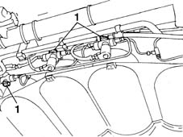
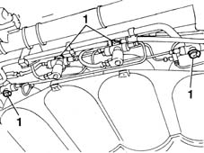
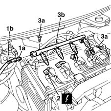
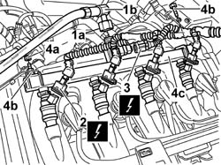

1058A60 SINGLE CNG MANIFOLD PIPE COMPLETE WITH INJECTORS - R R
- Path
- Procedures > 10 ENGINE UNIT > 1058 GAS CIRCUIT > 1058A GAS CIRCUIT MULTI POINT INJECTION > 1058A60 SINGLE CNG MANIFOLD PIPE COMPLETE WITH INJECTORS - R R
- Kind
- repair procedure (removal / refitting; the operation number is the code)
- Applies to
- engines: 1.6 16v; all production periods; only with equipment: BIPOWER and BLUPOWER
- Interactive page
- https://sloeber94.github.io/elrnDB-fMltpl/en/#/2891483
Applies to: engines: 1.6 16v; production: fino a 05/04; only with equipment: BIPOWER and BLUPOWER
 Removing
Removing
 Refitting
RefittingPlace the car on a ramp.
Disconnect the battery negative terminal.
Raise the ramp.
Applies to: engines: 1.6 16v; production: fino a 05/04; only with equipment: BIPOWER and BLUPOWER
1. Before working on the canisters, close the CNG cut out manual valves to prevent the escape of methane.

Applies to: engines: 1.6 16v; production: fino a 05/04; only with equipment: BIPOWER and BLUPOWER
1. Before working on the canisters, close the CNG cut out manual valves to prevent the escape of methane.

Applies to: engines: 1.6 16v; production: fino a 05/04; only with equipment: BIPOWER and BLUPOWER
Lower the vehicle.
1. Undo the connector (1a) and disconnect the low pressure flexible pipe (1b).
2. Disconnect the electrical connections for the CNG system injectors.
3. Undo the fixing bolts (3a) and remove the fuel manifold (3b) complete with injectors.

Applies to: engines: 1.6 16v; production: fino a 05/04; only with equipment: BIPOWER and BLUPOWER
Refitting
RemovingFit the fuel manifold on the intake chamber.
Tighten the manifold fixing bolts.
Connect the electrical connections to the injectors.
Connect the low pressure pipe to the manifold and tighten the fixing nut.
 | Fastening | Component | Ø | Value (daNm) |
|---|---|---|---|---|
- | Nut | CNG FEED PRESSURE REDUCTION UNIT | M18 x 1.25 | 7 |
Raise the car.
Open the CNG manual cut out valves.
Connect the battery negative terminal.
Remove the vehicle from the ramp.
Applies to: engines: 1.6 16v; production: da 06/04; only with equipment: BIPOWER
Removing
RefittingPosition the vehicle on a lift.
Drain the low pressure circuit as described in the operation
Applies to: engines: 1.6 16v; production: da 06/04; only with equipment: BIPOWER
1. Undo the connector (1a) and disconnect the low pressure flexible pipe (1b).
2. Disconnect the electrical connections for the CNG system injectors.
Description | Connector |
|---|---|
Methane injector |
3. Disconnect the electrical connection for the methane temperature and pressure sensor on the manifold.
Description | Connector |
|---|---|
Methane pressure/temperature sensor | K57 |
4. Undo the nut (4a) and the bolts (4b) and remove the fuel manifold (4c).

Applies to: engines: 1.6 16v; production: da 06/04; only with equipment: BIPOWER
Refitting
RemovingFit the fuel manifold on the intake chamber.
Tighten the bolts and the nut fixing the manifold.
Connect the electrical connections for the injectors.
Connect the electrical connection for the methane temperature and pressure sensor on the manifold.
Connect the low pressure pipe to the manifold and tighten the fixing nut.
Fastening | Component | Ø | Value (daNm) | |
|---|---|---|---|---|
- | Nut | CNG FEED PRESSURE REDUCTION UNIT | M18 x 1.25 | 7 |
Raise the vehicle.
Move the CNG cut-off solenoids to open position by hand and check system is efficient.
Remove the vehicle from the lift.
Op. 1042A06 C.N.G. - FUEL SYSTEM CHECK FOR ANY LEAKS USING ELECTRONIC DETECTOR FOLLOWING OPERATIONS